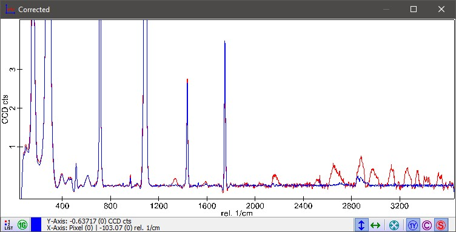

要执行正确的强度校正，需要完成以下步骤。
注意： 所有测量必须使用相同的激光、相同的光谱位置和相同的 CCD 相机设置！
准备工作
测量与校正
结果看起来如何？
在下面的图谱查看器中，您可以看到强度校正的结果。
您不会在单个含噪光谱中看到差异，但在高强度光谱或平均光谱中可以看到差异。
两条光谱均显示了一个包含荧光偏移的平均拉曼光谱，该偏移已使用形状背景扣除进行扣除。
红色显示未进行强度校正的结果，蓝色显示经校正后的结果：
